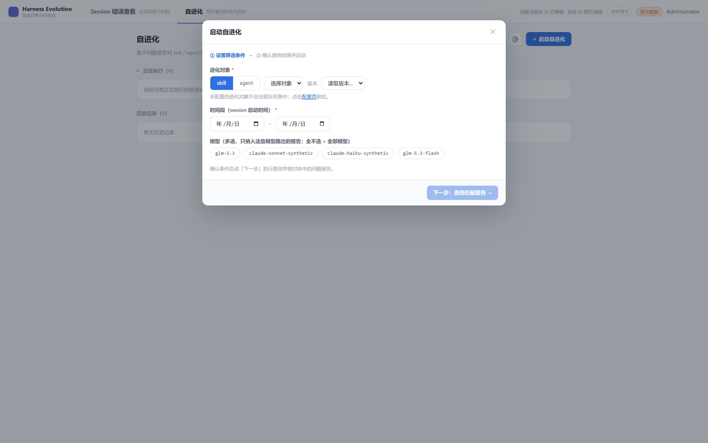
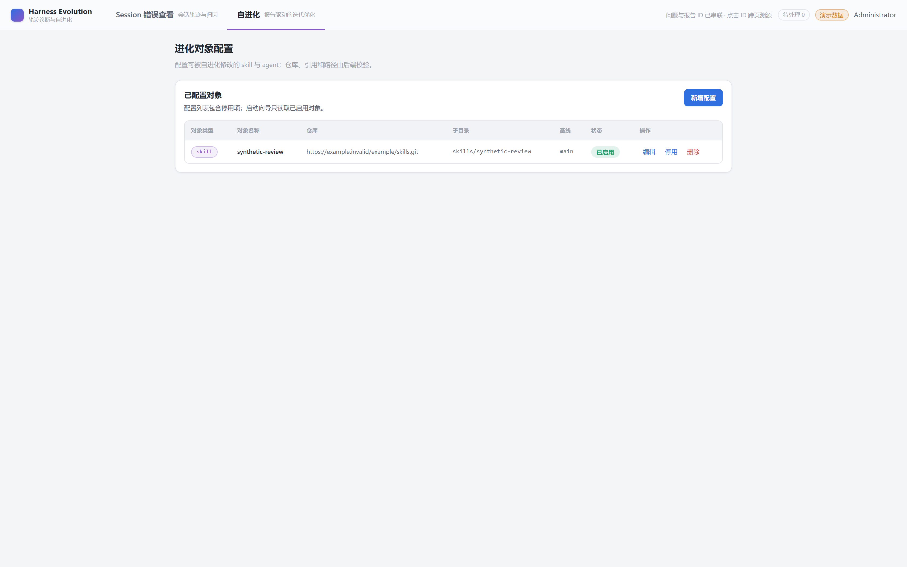

- PR
- #160
- Head commit
- ec0c96c
- 页面
- /evolution 启动向导 + /evolution/targets
- 后端
- 127.0.0.1:8787 · 本地 SQLite fixture（/api/health db ok）
- 浏览器
- Chromium 1200 headless · 1680x1050 @2x
COMPUTER USE SMOKE
Issue 150 向导配置入口冒烟
feat/150-wizard-gear-link head 上完成 /evolution 启动向导与配置入口的真实 Chromium 冒烟：登录进入运行列表、打开向导、第一步无齿轮按钮、提示行「配置页」链接的文案/基线样式/键盘焦点/hover 反馈/点击跳转、返回重开、页头齿轮保留与齿轮往返导航，10 个场景全部通过。已知环境事实（fixture 假域名导致 catalog 422、对象下拉恒为空、版本下拉停留「读取版本…」）如实记录，不影响本轮判定。
10冒烟场景
10PASS
0WARN
0FAIL
Environment and Artifact
2026-10-29 · Windows · Chromium(headless) · 本地 SQLite fixtureScenario Matrix
10 pass| # | 场景 | 结果 | 实际断言 | 证据 |
|---|---|---|---|---|
| 01 | 登录并进入 /evolution | PASS | admin 登录后落在 /evolution，运行列表空态文案「当前没有正在执行的自进化」真实可见（正在执行 0、暂无历史记录）。 | screenshots/01-login.png |
| 02 | 打开启动向导 | PASS | 点击「＋ 启动自进化」后弹窗标题「启动自进化」渲染，步骤条「① 设置筛选条件」带 on 高亮且「② 确认查询结果并启动」未高亮。 | screenshots/02-wizard-open.png |
| 03 | 第一步无齿轮按钮 | PASS | document.querySelector('.evolution-modal .gear') 为 null；实际弹窗容器探测为 .evov .modal，其内 .gear 元素数 0、含 ⚙ 的按钮数 0（弹窗按钮仅 ✕ / skill / agent / 配置页 / 下一步）。 | screenshots/03-step1-no-gear.png |
| 04 | 提示行链接视觉 | PASS | 提示行整句「未配置的进化对象不会出现在列表中；点击配置页前往。」完整；「配置页」computed style color=rgb(47, 111, 224)（--blue）、textDecorationLine=underline、textDecorationStyle=solid。 | screenshots/04-link-visual.png |
| 05 | 键盘可达 :focus-visible | PASS | Tab×5 真实键盘导航到达「配置页」，:focus-visible 生效：outlineStyle=solid、outlineWidth=2px、outlineColor=rgb(47, 111, 224)，非 none。 | screenshots/05-link-focus.png |
| 06 | hover 反馈 | PASS | page.hover 后 computed color 变为 color(srgb 0.1327 0.3134 0.6325)（≈rgb(34, 80, 161)，即 --blue-deep 的 color-mix 加深色，非原 #2f6fe0），textDecorationThickness 变为 2px。 | screenshots/06-link-hover.png |
| 07 | 点击跳转 | PASS | 点击「配置页」后向导弹窗 .evov detached，URL 变为 /evolution/targets，配置页 h1「进化对象配置」可见，跳转窗口内新增 console error 数 0。 | screenshots/07-targets-page.png |
| 08 | 返回重开 | PASS | history back 回 /evolution 后重开向导：弹窗重新渲染、标题与提示行整句完整；对象下拉仅「选择对象」禁用占位、版本下拉停留「读取版本…」——catalog 422 空列表为已知环境事实，不影响本场景判定。 | screenshots/08-wizard-reopen.png |
| 09 | 页头齿轮仍在（non-goal） | PASS | /evolution 页头 .target-config-entry 存在且 aria-label=配置进化对象（RouterLink 指向 /evolution/targets）。 | screenshots/09-header-gear.png |
| 10 | 配置页 ↔ /evolution 页头齿轮往返 | PASS | 关闭向导后执行 齿轮→配置页→返回→齿轮→配置页 一次往返：无报错弹窗（.evov 不存在、无可见 role=alert），往返窗口内新增 console error 0；全程仅既知 catalog 422 网络日志。 | screenshots/10-roundtrip.png |
Issues and Observations
P3 fixture 假域名导致向导对象下拉恒为空（已知环境事实，非缺陷）P4 登录前 /api/auth/refresh 探测产生 1 条 401 console 日志
fixture 假域名导致向导对象下拉恒为空（已知环境事实，非缺陷）
- Actual
- GET /api/catalogs/targets 返回 422；向导对象下拉仅「选择对象」禁用占位，版本下拉停留「读取版本…」。
- Expected
- fixtures 的 target repoUrl 为保留假域名 example.invalid，catalog 校验失败属预期；下拉在真实可解析仓库下才出项。
- 影响
- 不阻塞本轮任何场景断言；向导第一步其余控件（类型段、时间段、模型多选）均可交互。
已知环境事实 · 如实记录
登录前 /api/auth/refresh 探测产生 1 条 401 console 日志
- Actual
- 未登录冷启动时 auth refresh 探测 401，浏览器记录 1 条网络 error 日志；登录成功后不再出现。
- Expected
- 无 token 时的既有探测行为，与本 PR 无关。
- 影响
- 场景 07/10 的窗口内均无新增 error，判定不受影响。
既有行为 · 观察记录
Evidence
6 screenshots

Automated Coverage Assessment
3 areas reviewed| 区域 | 自动覆盖 | 结论 | 建议 |
|---|---|---|---|
| 向导提示行链接（文案/样式/键盘/hover/跳转） | 组件单测 + 本轮真实浏览器 | 五类断言在真实 Chromium 中全部通过。 | 保留真实浏览器冒烟作为视觉/交互验收。 |
| 第一步去齿轮（回归守卫） | 组件单测 + 本轮真实浏览器 | 真实 DOM 探测确认弹窗内无齿轮入口。 | 可把容器类名探测脚本并入 E2E 断言。 |
| 页头齿轮与往返导航 | 本轮真实浏览器 | 齿轮仍在、往返无报错弹窗与新增 console error。 | 后续可补 history 往返的浏览器 E2E。 |
Conclusion
冒烟通过10 个场景全部 PASS：向导第一步无齿轮、提示行「配置页」链接的样式/键盘可达/hover/跳转与页头齿轮往返全部符合预期，未发现需修复的缺陷。
- catalog 422 空下拉、版本「读取版本…」与登录前 401 探测为已知环境/既有行为，已如实记录且不影响判定。
- 向导打开时遮罩会挡住页头齿轮（模态预期行为），往返场景先以 ✕ 关闭向导再执行。
- 密码仅运行时从 apps/api/.env 读取并经环境变量传入脚本，未写入任何持久文件或报告。
Issue #150 · PR #160 · head ec0c96c